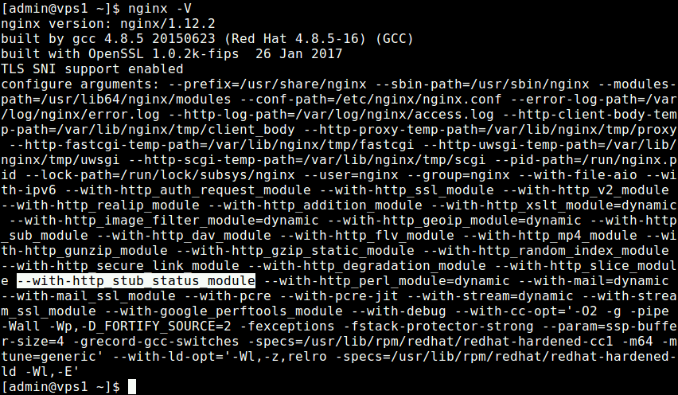
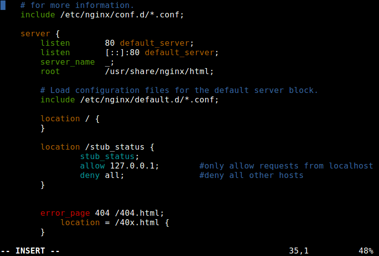
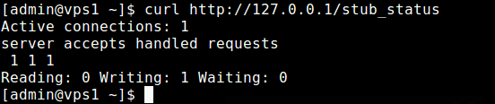
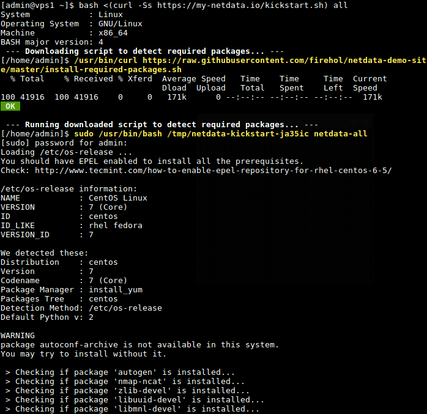
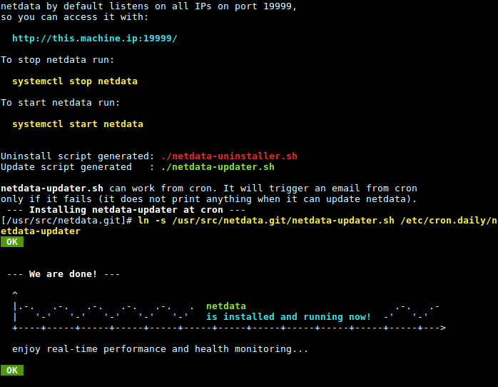
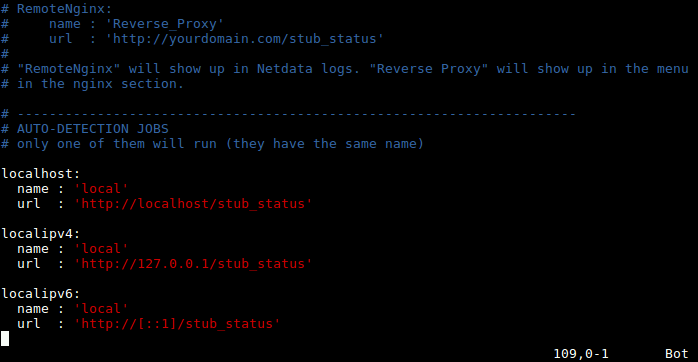
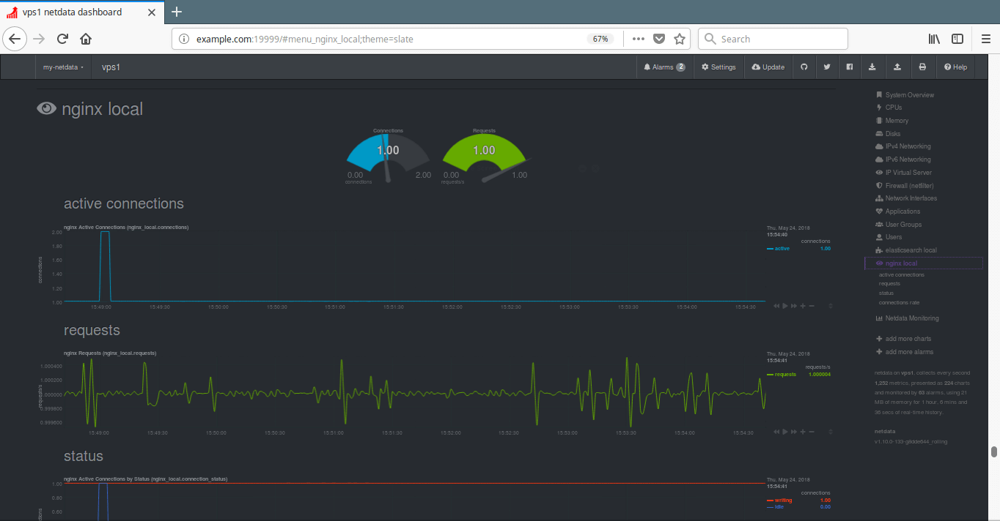

使用Netdata监控Nginx性能
原文地址: https://www.tecmint.com/monitor-nginx-performance-using-netdata-on-centos-7/
Netdata是一款开源软件，可扩展，自适应，可定制，是通过收集并可视化Linux系统的指标进行实时性健康监测的工具，功能强大。可以工作于各种设备。
这款系统健康监测工具，可以让你了解系统，应用程序或服务(如Web服务)的运行状况，以及分析它们为什么会有性能问题或一些异常问题。它能有效并高效的利用CPU及其它系统资源。
在本篇文章中我们将会说明如何使用Netdata在CentOS 7或者RHEL 7的发行版上监控Nginx HTTP web server的性能。
通过本文，最后可以看到利用Netdata可以可视化的监控Nginx Web服务的连接，请求，状态和连接速率。
第一步: 安装Nginx
1. 首先安装EPEL库，然后使用YUM从EPEL库中安装Nginx HTTP服务。
# yum install epel-release
# yum install nginx
2. 检查安装好的Nginx版本，它应该通过”--with-http_stub_status_module”配置参数编译了stub_status模块, 如下面截屏所示。
# nginx -v

3. Nginx安装成功后，启动并且设置自动启动，在系统启动后确保Nginx启动并运行。
# systemctl status nginx
# systemctl enable nginx
# systemctl status nginx
4. 如果你使用firwalld动态防火墙，你需要开放web服务器监听的80(HTTP)和443(HTTPS)端口，允许客户端的连接请求。
# firewall-cmd --permanent --add-port=80/tcp
# firewall-cmd --permanent --add-port=443/tcp
# firewall-cmd --reload
第二步: 启用Nginx Stub_Status模块
5. 现在启用netdata从Nginx Web服务中手机指标的stab_status模块。
# vim /etc/nginx/nginx.conf
拷贝并粘贴以下location配置到你的server配置段中，如下面截屏所示。
location /stub_status {
stub_status;
allow 127.0.0.1; #only allow requests from localhost
deny all; #deny all other hosts
}

6. 接下来，测试新的nginx配置是否有错误，并且重启nginx服务使改动的配置生效。
# nginx -t
# systemctl restart nginx
7. 然后，使用命令行工具curl测试nginx状态页。
# curl http://127.0.0.1/stub_status

第三步: 安装Netdata
8. 在这你可以使用一行shell命令来通这个项目在github仓库中的脚本来安装netdata。这行命令本将下载一个脚本去检测你Linux的发行版并安装构建netdata所需的系统软件包，然后，抓取最新的netdata源码，构建并且安装它。
使用下面的命令去启动kickstart脚本，all这个选项表示允许所有netdata的插件安装必需的软件包，包括Nginx的所有软件包。
# bash <(curl -Ss https://my-netdata.io/kickstart.sh) all
如果你不是以root身份访问系统，系统会提示你输入sudo命令的用户密码，并且你还需要按[Enter]键确认某些操作。

8. 构建并安装netdata之后，这个脚本将自动通过systemd启动netdata服务，并开启随系统启动后自动启动。默认Netdata监听在19999端口。

9. 接着，在防火墙开启访问netdata web UI的端口19999。
# firewall-cmd --permanent --add-port=19999/tcp
# firewall-cmd --reload
第四步: 配置Netdata监控Nginx性能
9. Nginx插件的netdata配置文件在/etc/netdata/python.d/nginx.conf, 以_YaML格式编写。
# vim /etc/netdata/python.d/nginx.conf
这个默认的配置已经可以满足你去监控Nginx web服务的需求。

在实际中请在阅读文档后，去修改netdata的配置文件，并在修改后重启netdata服务使修改生效。
# systemctl restart netdata
第五步: 使用Netdata监控Nginx性能
10. 现在打开一个web浏览器并且使用下面的URL去访问netdata的web UI。
http://domain_name:19999
OR
http://SERVER_IP:19999
从右侧的插件列表中，点击”nginx local“查看你监控的Nginx web服务。 你会看到一个如下图所示的可视化的活动连接数，请求数，状态和连接速率。

Netdata的Github仓库: https://github.com/firehol/netdata
最后，Netdata是一个针对Linux系统的实时分布式性能和健康监测的工具。 在本文中，我们已经展示了如何在CentOS 7上使用netdata监控Nginx Web服务器的性能。